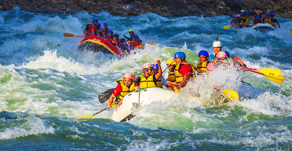
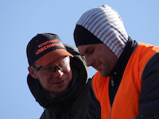

At White Water Rafting, we are committed to guaranteeing you the best time while you're out on the rivers! We have exceptional guides who have been on the rivers for more than 15 years! They will care for you and make sure you have a great time and a safe time on the water.


White Water Rafting
History
A little about White Water Rafting... We've been in business for over 20 years, serving the community. We started our company with a dad wanting to just get out on the water, he felt peace when he was out there despite the rapids. In doing so, he felt he could make a change in a lot of lives, due to the peace from the water. As well as the skills that he would provide the younger generation in learning from working as a team and experiencing the joy of the rapids.